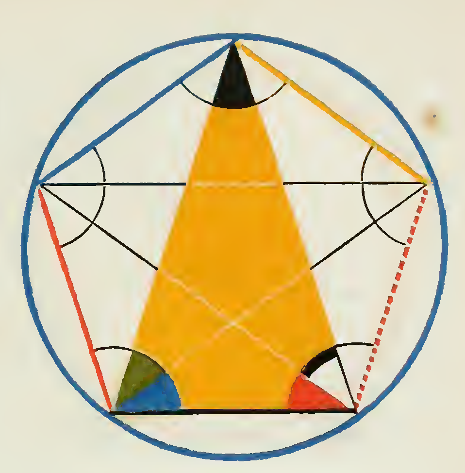

Proposition IV.11 — Regular Pentagon Inscribed in a Circle¶
Book IV, Proposition XI. Problem (Pickering p. 137 · G.224)
In a given circle () to inscribe an equilateral and equiangular pentagon.


Construction. Construct an isosceles Golden Triangle ([IV.10]) and inscribe in a triangle equiangular to it ([IV.2]). Bisect both base angles ([I.9]) by star diagonals meeting the circumference, and draw perimeter chords , , , and .
Demonstration (:just:`III.26`, :just:`III.29`, :just:`III.27`).
Because each of the five $36^\circ$ inscribed angles (, , , , and the remaining bisected half-angle) are equal, the five arcs upon which they stand are equal ([III.26]),
∴ the five subtending chords , , , , and are equal ([III.29]);
and the pentagon is also equiangular, as each interior angle stands upon an equal three-fifths arc ([III.27]). Q.E.F.
See Commentary on Proposition IV.11.